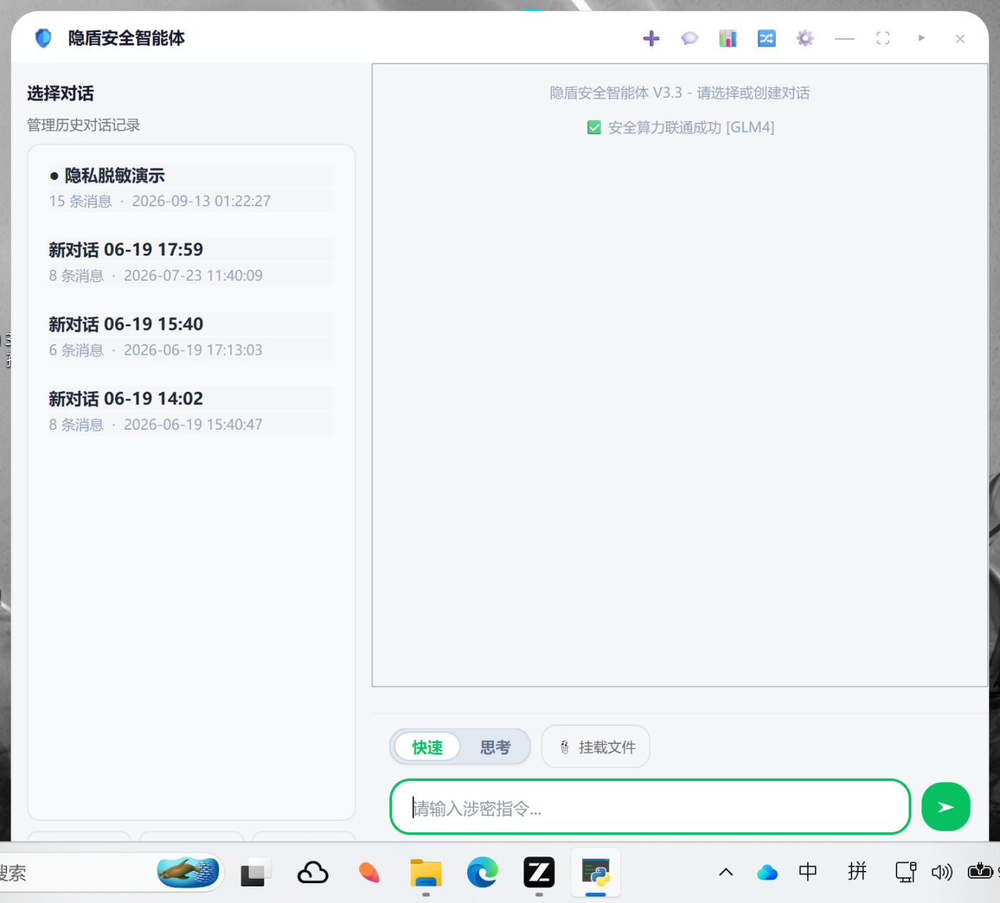
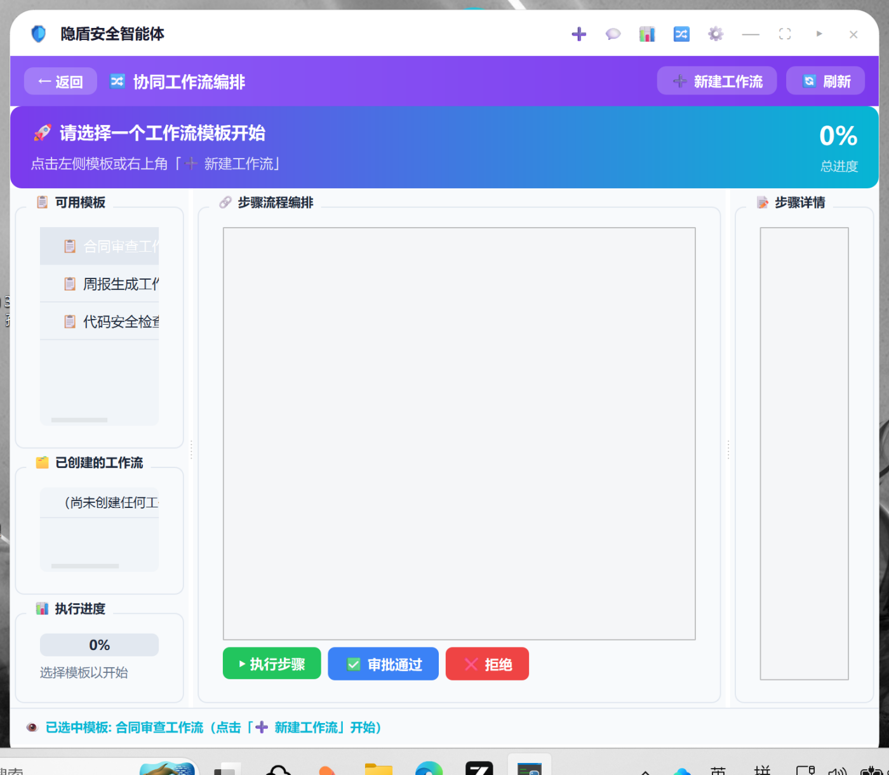

1 项目背景与设计理念
大模型办公助手正快速进入日常办公场景，但企业与机构在涉密文档处理上面临一个根本矛盾：办公数据高度敏感（合同、薪酬、病历、客户资料），而大模型服务天然要求把数据送出本地边界。无论是调用云端 API，还是把数据写入本地日志、审计文件、会话存档，每一个环节都可能成为泄露面。
隐盾安全智能体的核心设计理念可以概括为一句话：让大模型"看不见"敏感数据，却依然能完成办公任务。为此，我们在架构上确立了三条防线：
- 输入侧——所有进入大模型的文本（用户输入、文件内容、工具返回、历史摘要）必须先经过隐私脱敏网关，真实敏感数据以加密映射表形式留在内存，模型只接触语义完整的占位符；
- 执行侧——所有物理副作用（写盘、删除、执行命令）被限制在路径沙箱与权限等级之内，越界与高危操作熔断挂起，强制等待人类安全员二次审批；
- 留痕侧——所有关键行为（LLM 输入输出、工具调用、脱敏还原、审批决策）进入 HMAC 哈希链审计黑匣子，且审计本身只存脱敏预览，杜绝"审计系统反过来变成泄露源"。
同时，产品形态上选择常驻桌面最上层的半透明悬浮客户端，使安全能力以"随取随用"的方式融入办公流，而非一个需要专门打开的独立应用。
2 系统架构
系统采用「GUI 层 — 推理引擎层 — 安全内核层」三层解耦架构。GUI 层基于 PySide6 实现原子化组件封装；推理引擎层基于 LangChain 原生 Tool Calling 协议实现 ReAct 循环；安全内核层由隐私引擎、策略引擎、密钥管理、审计日志四大模块组成，以独立模块形式被上层调用，保证安全逻辑与业务逻辑严格分离。

数据在系统内的完整旅程为：用户输入 → 隐私脱敏 → ReAct 推理（模型只见占位符）→ 工具执行（沙箱校验 + 审批熔断）→ 结果脱敏 → 隐私还原 → 呈现用户，其中每一个环节的事件都同步写入哈希链审计日志。算力层面支持本地 Ollama（离线，数据全程不出网）与 OpenAI 兼容云端 API（出网数据已全部脱敏）双模式，按场景切换。
🧩 模块解耦
core / gui / worker / utils 四层命名空间包，约 1.6 万行 Python；安全内核可独立于 GUI 复用与测试。
🔌 算力双模
本地 Ollama 模型离线运行，数据零出网；也可一键切换 OpenAI 兼容云端模型，出网内容已全部占位符化。
🧠 原生 Tool Calling
基于 LangChain bind_tools 的 ReAct 循环，模型自主决策工具调用，支持深度可调（1–10 级）与 0.5 秒即时取消。
💾 会话加密持久化
会话记录加密落盘，脱敏映射表跨会话持久化并加密存储，历史轮次占位符可正确还原，杜绝"裸占位符"泄露。
3 核心功能与技术实现
3.1 内存级隐私脱敏网关（核心创新）
隐私脱敏网关（PrivacyEngine）是本项目最核心的自研组件，覆盖 20 余类敏感实体，按 GB/T 35273 个人信息安全规范思想划分为「绝密 / 机密 / 内部」三级，并给出量化风险评分：
| 分级 | 覆盖实体（示例） | 识别与校验机制 |
|---|---|---|
| 绝密 | 身份证、银行卡、PEM 私钥、JWT、口令字段、连接串密码、云平台密钥 | 正则粗筛 + 算法精验（身份证 GB11643 校验位可选、银行卡 Luhn 校验） |
| 机密 | 手机号、API 密钥、Bearer/Access Token、病历号、医保卡号、护照、车牌 | 程序化二次校验（手机号 11 位精验、云密钥前缀库、上下文触发词） |
| 内部 | 邮箱、地址、IP/IPv6/MAC、金额、人名、微信号、敏感路径 | 百家姓+触发词人名识别、行政区划地址模式、Luhn/边界断言防误伤 |
相比"纯正则替换"的朴素方案，网关在设计上解决了一个关键安全问题——还原劫持：若占位符格式可预测（如 [PHONE_0]），攻击者可在文档中植入同格式字面量，诱导还原逻辑写出错误数据。隐盾为每个占位符注入 4 位随机 nonce（如 [PHONE_0_a3f9]），使碰撞概率降至不可行；同时提供 strict 还原模式，解密失败的占位符保留原样、绝不回退明文。
映射表（占位符 → 真实值）使用 Fernet 对称加密（AES-128-CBC + HMAC-SHA256）后存储，主密钥由 SecretManager 统一管理：密钥文件移出项目目录、Windows 下经 DPAPI（CryptProtectData）按用户账户包裹。脱敏效果实测如下：
劳务合同（节选）：甲方联系人刘建国，电话13912345678，身份证号110101198803075612，邮箱liujianguo@sunrise.com，居住地址北京市海淀区中关村大街27号3号楼502室。乙方开户行账号6228480402564890018，月服务费人民币28,500元。系统对接密钥 sk-proj-9xK2…，后台登录密码=Adm!n#2026，病历号 MRN0086472，医保卡号 1152233445566778901。
【② 实际发送给大模型的脱敏文本】
劳务合同（节选）：甲方联系人[NAME_0_ouoe]，电话[PHONE_0_97ct]，身份证号[IDCARD_0_7ny2]，邮箱[EMAIL_0_xxxx]，[ADDRESS_0_xxxx]。乙方开户行账号[BANKCARD_0_tx4i]，月服务费人民币[MONEY_0_3gqj]。系统对接密钥 [APIKEY_0_xxxx]，后台登录密码=[PASSWORD_0_xxxx]，病历号 MRN[MEDICAL_RECORD_0_a2oj]，医保卡号 [MEDICAL_INSURANCE_0_xxxx]。
【③ 脱敏统计】 绝密 2 处 · 机密 5 处 · 内部 4 处 风险评分 51 分
【④ 模型回答（模型视角，只见占位符）】
已为 [NAME_0_ouoe] 建档：联系电话 [PHONE_0_97ct]，月费 [MONEY_0_3gqj] 已登记…
【⑤ 还原后呈现给用户的回答】
已为 刘建国 建档：联系电话 13912345678，月费 28,500元 已登记…
此外，网关的防护贯穿整个会话生命周期：摘要压缩后二次脱敏（防止真实值被复制进摘要落盘）、脱敏映射表跨会话加密持久化（历史轮次占位符可正确还原）、映射表"用后即焚"主动销毁。
3.2 脱敏 RAG 本地知识库
针对办公场景"机密文档本地检索"需求，隐盾实现了基于 Chroma 向量库 + Ollama 本地 embedding（nomic-embed-text）的离线知识库，其独特之处在于入库即脱敏管线：文档切块后逐块过脱敏引擎，向量库中只存占位符文本，真实隐私数据永不进入向量库；检索时使用 KB_ 前缀隔离占位符命名空间，避免与用户输入占位符冲突；回答中的占位符自动还原。我们对向量库内容做了逐 chunk 扫描验证，确认无真实敏感数据残留。
3.3 全链路审计黑匣子
审计模块（AuditLog）记录 LLM 输入输出、工具调用与结果、隐私检测/脱敏/还原、访问控制审批等全部关键事件，采用 HMAC-SHA256 哈希链存储：每条日志的哈希覆盖自身内容与前一条哈希，任何篡改都会被完整性校验立即发现。审计审计键与数据密钥分离，存储于用户目录而非项目目录，避免"密钥与被保护对象同盘"。尤为关键的设计是——审计只存脱敏预览，所有落盘字段在写入前统一经过掩码管线，防止审计系统成为二次泄露源。GUI 面板提供统计概览、哈希链可视化、筛选查询与 JSON/HTML 报告导出。
3.4 文件沙箱 · 权限分级 · 熔断审批
所有具备物理副作用的工具均实施四层防御：
- 路径沙箱：每个文件工具解析目标后经 realpath + commonpath 校验，先化解符号链接/junction 再判定越界，越界一律拒绝；文件名强制 basename 化，杜绝 ../../ 穿越；
- 权限分级：完全控制 / 安全只读 / 彻底审计 三级权限模式，只读与审计模式直接断开写盘能力；
- 命令白名单：run_local_command 仅放行 python/pip/git/echo 白名单命令，shlex 解析为 argv 后以 shell=False 执行，参数级拦截 shell 操作符、路径穿越与绝对系统路径，从机制上杜绝命令注入；
- 熔断审批：策略引擎（deny-by-default）判定的高危操作触发独立审批弹窗，后台线程阻塞等待人工决策，审计同步记录批准/驳回；5 分钟无响应自动驳回并关闭弹窗，防止"死弹窗"误导。
另有两道模式级防线：快速回答模式下所有写操作工具（创建/修改/删除/命令执行）被整体禁用，只保留只读能力；思考模式的思考深度（1–10）决定推理轮数上限，兼顾安全与效率。
3.5 ReAct 推理引擎与桌面交互
推理引擎基于 LangChain bind_tools() 原生 Tool Calling 协议（彻底抛弃正则解析），实现"推理 → 工具调用 → 观察 → 总结"的完整 ReAct 闭环，并包含多项工程化设计：上下文超限自动摘要压缩、AIMessage(tool_calls) 与 ToolMessage 配平裁剪、强制工具调用机制（解决小模型不肯调用工具的问题）、线程池包装的可中断 LLM 调用（取消响应 ≤0.5 秒）、连续失败熔断。桌面交互层面提供半透明悬浮窗、亮暗双主题、LaTeX 公式渲染、多会话管理与回答模式持久化。
4 功能实测与效果展示
以下截图与数据均来自 2026-09-13 在 Windows 11 + RTX 3060 Ti / Ollama qwen2.5-7b 与 GLM-4-Flash 双算力环境下的真实运行实拍，测试会话「隐私脱敏演示」包含 16 轮真实对话。

4.1 涉密指令全链路演示：脱敏 → 云端推理 → 审批 → 写盘 → 还原
演示指令要求把含姓名、手机号、身份证号、邮箱的客户信息写入本地文件。隐私网关首先将四类实体替换为占位符后才交给模型；模型（本演示使用云端 GLM-4-Flash，出网内容已全部脱敏）自主发起 create_local_file 工具调用；策略引擎熔断拦截并弹出人工审批；安全员授权后文件成功创建；最终回复中的占位符自动还原为真实数据呈现给用户。磁盘上生成的文件内容与用户指令完全一致，且云端模型全程未接触任何真实敏感值。


4.2 安全防御实测
针对两类典型攻击向量的实测结果（详见第 5 节完整测试记录）：
路径越界拦截：指示读取沙箱外系统路径——realpath + commonpath 校验判定越界，拒绝执行并回退提示，未产生任何读取行为。
4.3 设置面板与本地知识库管理

5 安全对抗测试：红队—修复—回归闭环
作为以安全为核心卖点的项目，我们并未止步于"功能可用"。8 月底团队对全部 15 个核心模块开展了一轮对抗性安全测试（20 余项攻击用例动态验证 + 通读源码审查），输出分级问题清单（P0–P3），随后逐项修复并补充回归测试，形成了完整的红队—修复—回归闭环。本轮闭环累计修复/加固 15 项，代表性成果如下：
| # | 发现的问题 | 修复与加固 | 状态 |
|---|---|---|---|
| P0-1 | 审计日志工具结果接口参数颠倒，成功的工具调用被覆盖为失败 | 修正调用方参数顺序；新增调用点静态扫描回归测试（test_14） | ✅ 已修复 |
| P0-2 | 本地主密钥曾被提交进 git 历史 | 密钥移出跟踪区并迁移至用户目录（DPAPI 包裹）；历史清理 + 密钥轮换流程已确立 | ✅ 已处置 |
| P0-3 | 审计日志泄露明文 PII | 统一落盘前掩码管线（_mask_details），只存脱敏预览与长度 | ✅ 已修复 |
| P1-1 | 命令执行为 shell=True + 子串黑名单，可被 cmd/powershell 绕过 | 重构为白名单 + shlex + shell=False + 参数级纵深拦截 | ✅ 已重构 |
| P1-2 | 路径"沙箱"默认放行任意绝对路径 | realpath + commonpath 越界判定，deny-by-default 策略引擎 | ✅ 已重构 |
| P1-3 | 工作流链路绕过隐私网关，合同原文直发云端 | 全部 LLM 调用统一走 anonymize → invoke → deanonymize 管道 | ✅ 已修复 |
| P1-4 | 审批等待 60 秒超时且弹窗残留，用户点击"授权"实为已驳回（回归测试中发现） | 超时延长至 300 秒，超时自动关闭弹窗并广播状态提示 | ✅ 已修复 |
| P1-5 | 占位符还原可被文档内植入的字面量占位符劫持 | 占位符注入随机 nonce；strict 还原模式不解密即保留 | ✅ 已修复 |
| P2-1 | 系统代理（Clash 等）劫持本地回环请求，本地 Ollama 调用 502（回归测试中发现） | 包入口强制 NO_PROXY=127.0.0.1,localhost，本地流量永不过代理 | ✅ 已修复 |
| P2-2 | 5 位以上裸数字金额（25000元）漏检，向量库实测发现残留（回归测试中发现） | 金额正则新增 4–10 位裸数字分支，向量化前逐块脱敏复验通过 | ✅ 已修复 |
| P2-3 | 中文口令字段（登录密码=xxx）漏检 | 口令规则纳入中文标签并修复值字符集吞句问题 | ✅ 已修复 |
| P2-4 | 人名识别漏掉当代高频大姓（刘/徐/林等，古百家姓排序缺陷） | 姓氏表按第七次人口普查高频姓氏补全，回归验证通过 | ✅ 已修复 |
6 测试汇总与质量保障
项目建立了 5 个测试套件共 40 余项断言，覆盖隐私引擎、审计哈希链、记忆管理、工作流引擎与知识库管线，全部通过：


| 测试套件 | 覆盖范围 | 结果 |
|---|---|---|
| test_privacy_engine | 20+ 类实体识别/脱敏/还原、nonce 防劫持、strict 模式、旧版兼容 | ✅ 通过 |
| test_audit_log | 哈希链生成与防篡改检测、事件类型覆盖、报告导出、调用点一致性静态扫描 | ✅ 通过（14/14） |
| test_memory_optimize | 上下文摘要压缩、跨轮脱敏还原、序列化往返 | ✅ 通过（6/6） |
| test_workflow | 工作流执行、审批链机制、自定义工作流、数据导出 | ✅ 通过 |
| test_knowledge_base | 多格式入库、切块向量化、语义检索、向量库零明文隐私验证 | ✅ 通过 |
7 总结与展望
隐盾安全智能体用约 1.6 万行 Python 代码，完整实现了一套"让大模型安全地处理涉密办公数据"的端到端方案：隐私脱敏网关从机制上消除了模型侧的数据泄露面，沙箱/权限/白名单/熔断审批把物理副作用关进笼子，哈希链审计让每一次决策可追溯且不可篡改，脱敏 RAG 让本地机密文档检索成为可能。更重要的是，项目经历了完整的红队—修复—回归安全工程闭环——我们发现并修复了自身 15 项安全与质量问题，并将对抗用例固化为回归测试。
下一步计划
- 工具调用结果核验：对模型声称的写盘结果做文件系统侧二次确认，杜绝幻觉式"假成功"；
- 审计链头外部锚定：定期将哈希链链头锚定至外部只增存储，抵御本地攻击者整体重算哈希链；
- 策略引擎规则可视化：在 GUI 中开放 deny/confirm 规则的自定义编辑；
- CI 静态安全扫描：GitHub Actions 接入 bandit/semgrep，将安全左移至每次提交。
附注：本项目为大学生创新竞赛作品，仅供学习研究使用。报告中全部截图与测试数据取自真实运行环境，演示所用个人信息（张伟/13812345678 等）均为公开测试样例，不涉及任何真实个人数据。
附录 A 评审要点速览
| 维度 | 关键事实 |
|---|---|
| 代码规模 | 约 16,000 行 Python，36 个源码模块，四层命名空间包（core / gui / worker / utils） |
| 隐私防护 | 20+ 类敏感实体识别；占位符随机 nonce 防还原劫持；Fernet+DPAPI 双层密钥保护；向量库零明文实测通过 |
| 执行防护 | realpath+commonpath 沙箱、三级权限、命令白名单（白名单/操作符/穿越三层拦截均实测验证）、高危熔断人工审批 |
| 可追溯性 | HMAC-SHA256 哈希链审计，篡改即告警；审计自身只存脱敏预览；支持 JSON/HTML 报告导出 |
| 安全工程闭环 | 红队对抗测试 → 分级问题清单（P0–P3）→ 15 项修复加固 → 回归测试固化，全流程留痕可查 |
| 质量保障 | 5 个测试套件 40+ 断言全量回归通过；离线工具层防御单测（沙箱/白名单/权限）全部通过 |
| 演示环境 | Windows 11 · RTX 3060 Ti · Ollama qwen2.5-7b（离线）/ GLM-4-Flash（云端）双算力实测 |
| 交付物清单 | 源码仓库 · 本报告（HTML/PDF）· 8 张真实运行截图 · 架构图 · 安全测试与回归记录 · 5 个测试套件 |
隐盾安全智能体 · 让本地 AI 更安全、更智能、更可控 | Yindun Security Agent © 2026 Yindun Team